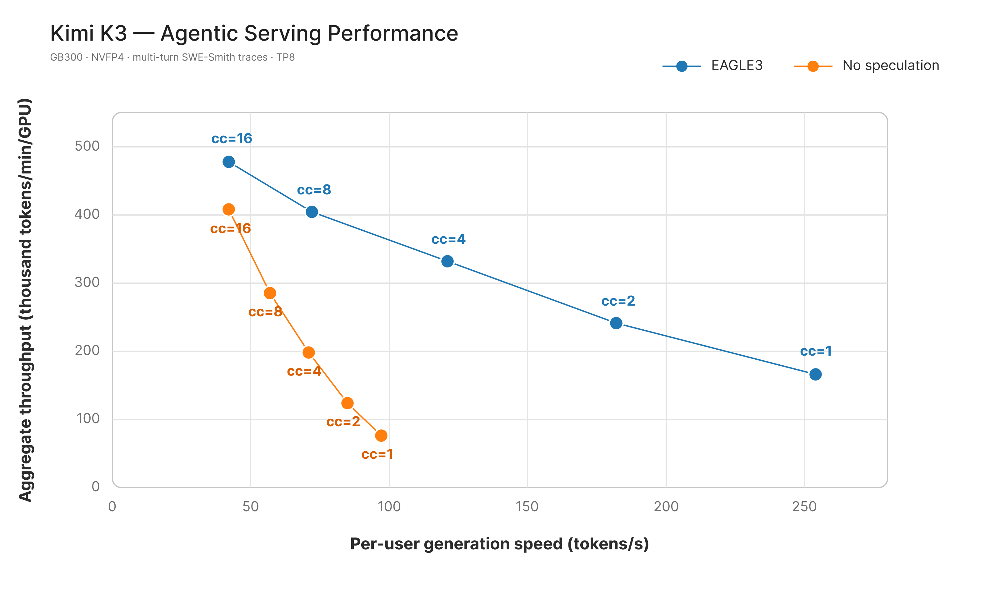
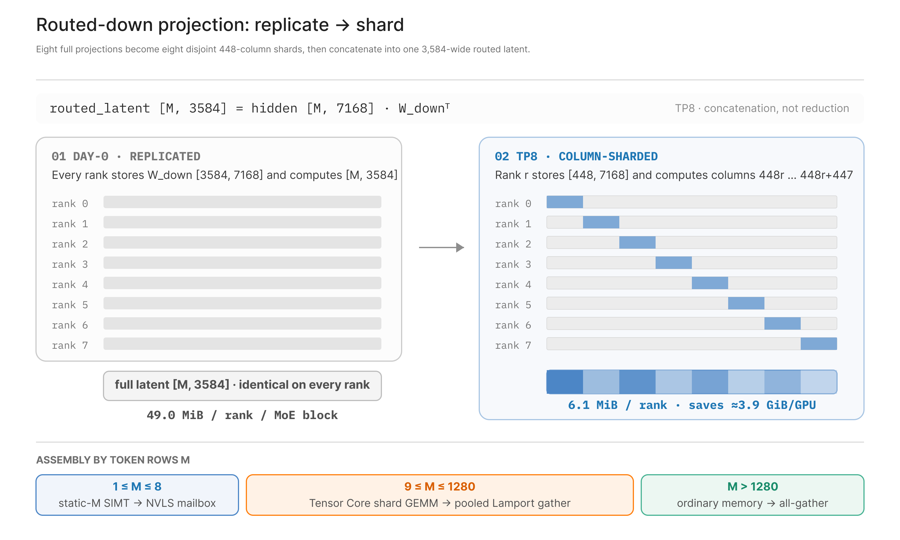
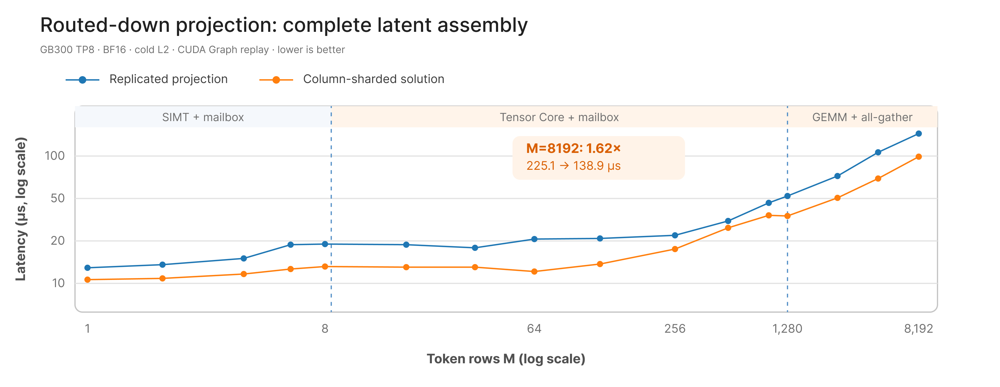
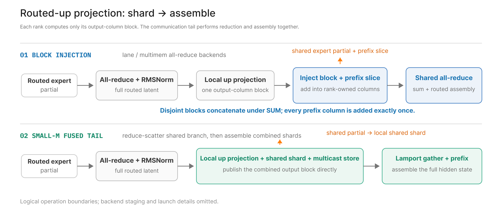
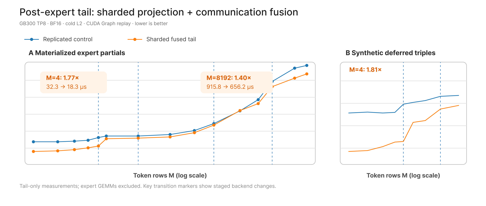
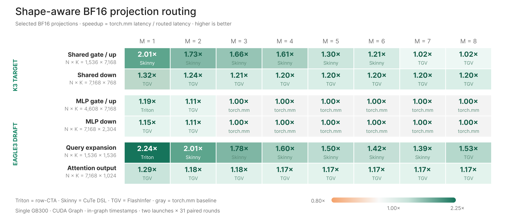

把Kimi K3跑在GB300上是个系统问题：KDA、Gated MLA、LatentMoE和通信、持久状态搅在一起，长多轮Agent负载把孤立decode测不出的开销全暴露出来。LightSeek这篇三部曲的第一部，讲单NVL72域TP8的优化：EAGLE3、通信感知切分、Replay SSM。下文拆解。
服务曲线上每个点是一个实测并发。往右是每个用户生成更快，往上是每GPU聚合吞吐更高。对比的是EAGLE3与非投机执行，workload与服务配置冻结一致。
基准契约：GB300 GPU，8卡跨两个4卡计算托盘但同属一个NVL72 NVLink域；注意力TP8、MoE TP8；目标模型nvidia/Kimi-K3-NVFP4；draft模型lightseekorg/kimi-k3-eagle3-mla，BF16未量化；MLA后端TokenSpeed MLA；KDA后端CuTe DSL prefill加fused Triton decode/verify；MoE后端FlashInfer TensorRT-LLM；KV cache FP8；workload是冻结的多轮SWE-Smith trace；上下文从约50K input token起，每轮加约800 token，最多约68K；生成10到15轮，每轮最多500输出token；并发1、2、4、8、16；EAGLE3验证3个draft步、4位置目标窗口。
8个TP rank跨两个托盘但不出NVL72域，这组实验没有跨机架网络跳。SWE-Smith trace模拟Agent编程会话的形状：长prompt、重复工具调用trace、多轮不断延长同一对话。每轮复用大段历史，追加工具输出，再要一段相对短的回复。
指标是每GPU每分钟token数TPM/GPU，和每用户每秒生成token数TPS/user，由TPOT换算。TPS/user不含首token时间。两个指标一起看，加并发时系统吞吐与单用户体验怎么变。
对比范围声明：所有点用同一trace集、同一目标模型、同一服务配置，意图是EAGLE3对非投机的配对比较；别家系统的结果要先对齐workload与指标定义才可比。
图1横轴TPS/user、纵轴TPM/GPU，标签标出每点的实测并发。EAGLE3把整条曲线往外推：低并发和高吞吐区都受益。在50 TPS/user的参考生成速度下，对EAGLE3并发8和16两点线性插值，约459K TPM/GPU，这是曲线上的插值点，不是独立测量。

| 组件 | 配置 |
|---|---|
| GPU | NVIDIA GB300 GPU |
| 拓扑 | 8卡跨两个4卡计算托盘，同属一个NVL72 NVLink域 |
| 并行 | 注意力TP8，MoE TP8 |
| 目标模型 | nvidia/Kimi-K3-NVFP4 |
| Draft模型 | lightseekorg/kimi-k3-eagle3-mla |
| Draft精度 | BF16，未量化 |
| MLA后端 | TokenSpeed MLA |
| KDA后端 | CuTe DSL prefill；fused Triton decode/verify |
| MoE后端 | FlashInfer TensorRT-LLM |
| KV cache类型 | FP8 |
| 负载 | 冻结的多轮SWE-Smith trace |
| 上下文增长 | 约50K input token起；每轮约800 token；最多约68K |
| 生成 | 10到15轮；每轮最多500输出token |
| 并发 | 1、2、4、8、16 |
| EAGLE3验证 | 3个draft步；4位置目标窗口 |
profile拆出三类反复出现的开销：LatentMoE里复制投影与通信感知切分的权衡，KDA的临时状态存储，以及主模型算子周围的小M执行。这些开销在93个decoder层里反复出现，包括69个KDA层、24个MLA层、92个MoE块。多token验证让某些形状与状态生命周期约束更显眼，但下面讲的是K3目标路径，不是投机解码算法本身。
最初实现把两个路由隐投影都复制：每TP rank存并算完整的hidden到隐down投影，以及专家之后完整的隐到hidden up投影。省了显式拼装投影分片，但权重存储和投影计算都翻了8倍。理想是两个投影都切，但MoE块两侧的通信权衡不同：切down投影要新增拼装本地隐分片；切up投影反而能重构专家后的通信路径，把路由与共享专家的规约、本地投影分片、最终hidden组装合成一步。目标是down路径的拼装代价尽量小，up路径的切分同时降复制计算和专家后尾巴的通信。
路由down投影：每MoE块先把7168维hidden投到3584维路由隐空间。复制形态下每rank存完整 [3584, 7168] BF16权重、算全部输出列。列切分把输出轴按TP8分：rank r存并算 [448, 7168] 块，覆盖隐列448r到448r+447，再拼回完整路由隐。
拼装路径按M选：M≤8用静态M的SIMT kernel，算完本地块直接经NVLink SHARP多播虚地址发布；8  切路由down投影，每rank权重从49.0 MiB降到6.1 MiB每MoE块，92个块在每GPU省约3.9 GiB。延迟也不只小形状受益：M=4整操作14.9降到12.8μs；M=8192从225.1降到138.9μs，含all-gather。M=1280到1281的跳变是mailbox拼装切到GEMM加all-gather，大M点测的是投影可扩展性，超出本workload的decode与验证区间。  路由up投影：最初实现把路由和共享专家的部分和分别规约，再在每rank算完整复制up投影。切分路径每rank只算hidden_size/TP个输出元素。关键是块注入：每rank把自己的投影块和前缀张量的对应切片，加进共享专家部分和的匹配列。块互不相交，一次共享all-reduce既求和又拼装，省掉单独的路由all-gather。GB300上这条路径基于TensorRT-LLM的多节点NVLink all-reduce设计，经FlashInfer承接，一shot和两shot的Lamport协议用NVLink多播内存做小TP规约，TokenSpeed加K3专用epilogue让规约后的相邻计算保持融合。小M时融合尾巴改走reduce-scatter共享分支，在投影epilogue里加本地共享分片，多播发布合并块再做Lamport gather，同时加上前缀张量。这部分集成有NVIDIA DevTech的技术指导与优化支持。  down和up投影权重一样大，各省约3.9 GiB/GPU，两处合计相对复制布局省约7.7 GiB/GPU。从路由与共享专家产出本地部分和算起，完整尾巴M=4从32.34降到18.28μs，扣掉空事件开销1.77倍，用原始事件间隔算是1.69倍；M=8192从915.77降到656.22μs，1.40倍。M=256处过渡形态比对照慢19.4%，对照侧M=2049的跳变是它从MNNVL回退到NCCL。这些是局部组合对比，不是孤立finalize融合收益，更不是端到端加速。  每个token在每KDA层推进卷积与循环状态。多token验证下，接受长度要等整个候选窗口评完才知道，每位置都快照完整状态，内存随batch和验证宽度涨。Replay SSM只留已提交状态做锚，记重建要的小投影与门输入；采样返回接受长度后，一个batched kernel重放接受前缀加目标采样token。 TP8的K3上，快照一行每请求每KDA层795 KiB：27 KiB BF16卷积状态加768 KiB FP32循环矩阵。batch 64时，存锚加4个验证位置、69个KDA层，要16.7 GiB/GPU。Replay只要0.4 GiB/GPU，省16.4 GiB/GPU，即97.8%，45倍，用fused verify和replay kernel没观测到延迟增加。 内存换算：这里cache几何下，投影切分的7.7 GiB参数缩减和Replay SSM的16.4 GiB验证工作区缩减，按每逻辑token 14.1 KiB/GPU，分别约等于0.6M和1.2M个目标加draft的FP8 cache token。这不是分配器峰值测量，也不保证理论容量能同时分配出来。 通信与状态优化之外，剩下的decode与验证开销不再被单个大算子主导，而是一堆短投影、中间交接、路由步骤、元数据准备，围着4位置验证窗口转。单个都很小，但在模型里反复出现，decode与验证的低token数下就显眼了。 形状感知投影路由：没有一种GEMV或GEMM实现通吃所有投影形状。按 (M,N,K) 区域在Triton row-per-CTA GEMV、CuTe DSL skinny GEMM、FlashInfer TGV、torch.mm里选。图6覆盖NVFP4目标的未量化共享专家投影和选定的BF16 EAGLE3 draft投影，目标FP8注意力投影不在比较里。基线全用torch.mm，路由决策按冷L2测量，更接近服务行为；选定的瘦形状在指针允许时再加256-bit load。  KDA融合：多token验证在卷积与循环更新周围引入一串小操作。短卷积与循环能融则融，门准备按形状在切分与融合间选，跨步切片直接从合并输入投影里吃，不repack成连续中间量。目标是砍掉循环核心周围的launch与内存搬运，不动KDA计算本身。 MLA decode与验证融合：MLA路径上注意力之前的几处decode交接可以压掉。FP8 KV cache下，优化路径在同一launch里构造FP8 query并写隐KV cache，中间物化省了。这些融合针对小decode与验证形状，大prefill形状继续用现有kernel。 AttnRes与投机元数据：现有fused AttnRes路径扩展到更小的多token验证形状。模型算子之外，低M下显眼的元数据链也压掉：分页位置与页表准备，加KDA replay元数据准备。专用launch按步或按cache组跑，不再按层跑。 局部消融：MLA query加cache写，M=4，6.43降到4.39μs；AttnRes输出RMSNorm，M=4加7个历史块，10.48降到8.20μs；写槽准备，1请求4位置窗口，30.49降到4.30μs；KDA已提交状态元数据，1请求4位置窗口，21.35降到4.40μs。这些路径都有形状门限，门限外运行时保留参考实现。计时是单GB300 GPU上NVFP4兼容的TP8 per-rank形状、合成输入、冷L2准备、CUDA Graph回放加图内计时的局部消融，两次独立运行，不是端到端收益的加总估计。 Part I说明K3在TP8上的优化是系统级协同设计。受控服务负载下，EAGLE3改善聚合吞吐对每用户生成速度的曲线；目标路径里，LatentMoE投影切分拿回约7.7 GiB/GPU参数存储，Replay SSM把验证工作区从16.7 GiB/GPU压到0.4 GiB/GPU；局部消融指出通信感知拼装与形状专用融合砍掉剩下的算子与元数据开销。这些结果边界各不相同，不能加总成一个端到端加速比。 专家并行：EP同时改变MoE路由与通信，值得单独的吞吐与尾延迟研究。 P/D分离：长Agent prompt让prefill放置与KV传输重要，但这里故意排除。 单NVLink域之外的通信：跨机架多一跳网络，可能偏好不同的collective或投影策略。 其他投机路径：这里没评，另有一篇博客专门对比投机解码算法与draft配置。 Part II讲专家并行执行，覆盖WideEP与prefill-decode分离；Part III回到端到端视角，用企业部署案例讲分布式调度、多级缓存，以及长多轮Agent负载生产运行的经验。 代表性服务启动配置如下。复现端到端结果还需要冻结的SWE-Smith trace与客户端并发调度，原文未附带。 参考：https://lightseek.org/blog/kimi-k3-optimization-gb300-part-i.htmlReplay SSM:KDA验证状态
KDA验证工作区，max_num_seqs=64 每GPU 逐位置状态快照 16.7 GiB Replay SSM工作区 0.4 GiB 省下内存 16.4 GiB (97.8%) 等价FP8 cache容量 约1.2M token Kernel融合与形状感知路由
路径 测量形状 基线→优化 比较边界 MLA query与cache写 M=4 6.43 → 4.39μs 合并的query/cache写阶段 AttnRes输出RMSNorm M=4，7个历史块 10.48 → 8.20μs 全混合epilogue，非上提部分和路径 写槽准备 1请求，4位置窗口 30.49 → 4.30μs 完整元数据链 KDA已提交状态元数据 1请求，4位置窗口 21.35 → 4.40μs 完整元数据链 边界与下一步
服务启动配置
tokenspeed serve nvidia/Kimi-K3-NVFP4 \
--served-model-name kimi-k3 \
--attn-tp-size 8 \
--moe-tp-size 8 \
--mm-encoder-tp-mode data \
--max-num-seqs 64 \
--gpu-memory-utilization 0.92 \
--trust-remote-code \
--attention-backend tokenspeed_mla \
--kda-backend cutedsl_kda \
--moe-backend flashinfer_trtllm \
--kv-cache-dtype fp8 \
--speculative-algorithm EAGLE3 \
--speculative-draft-model-path lightseekorg/kimi-k3-eagle3-mla \
--speculative-num-steps 3 \
--drafter-attention-backend tokenspeed_mla
系统优化没有银弹，只有把每一处的10μs都算清楚。Part II见专家并行。
Kimi K3技术详解之KDA: 线性注意力如何精准编辑被压缩的记忆
TokenSpeed-Kernel：把推理内核做成一等公民
vLLM+Mooncake: 把agentic前缀复用从1.7%拉到92.2%
在NVFP4上超越cuBLAS: 从零手写+Claude极限优化Blackwell GEMM
小米MiMo罗福莉:8卡GPU让1T参数模型跑出1000 TPS , FP4+DFlash+TileRT全解读
Kimi K3技术解析之AttnRes: 打破Transformer沿用十年的残差各层等权的假设
Agent卷向AI Infra: SGLang团队用硬核Agent优化框架和CUDA Kernal性能